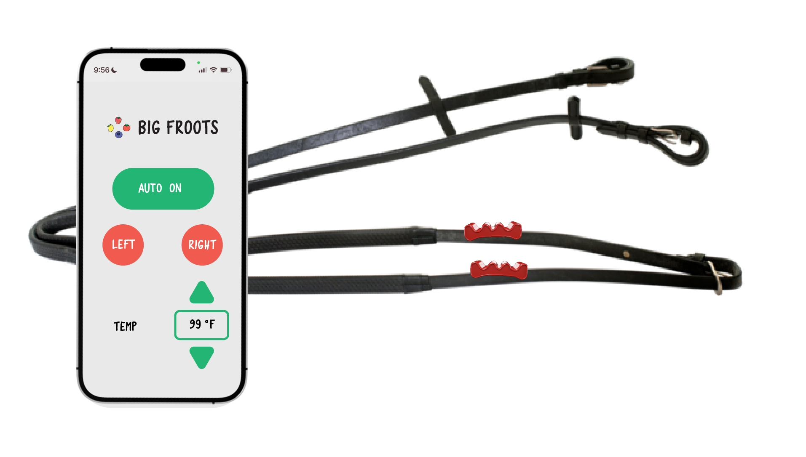
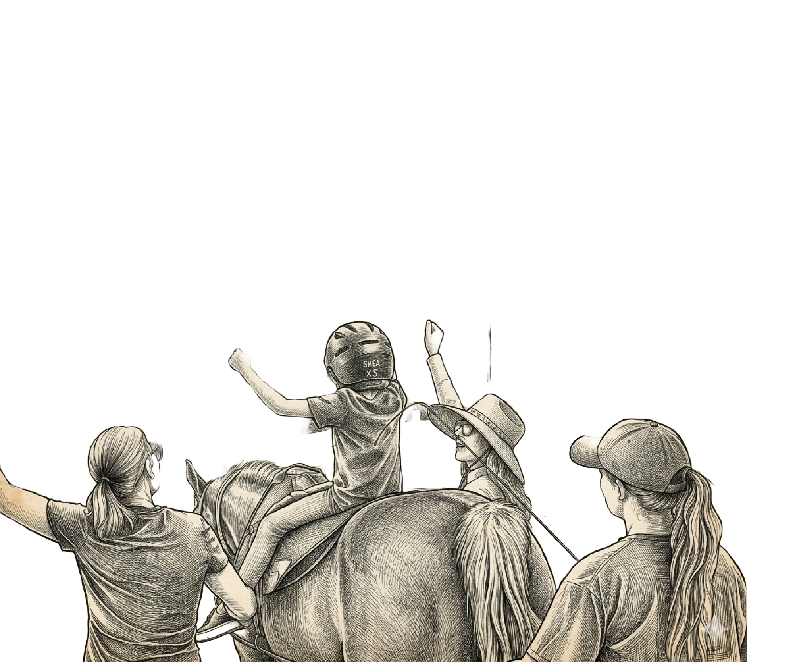
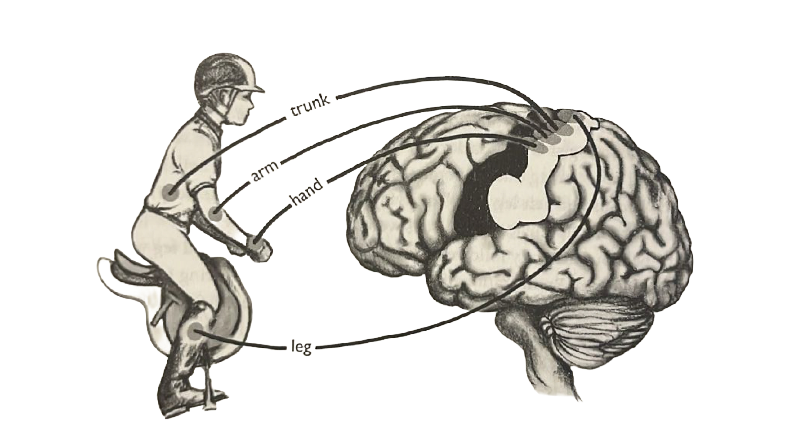

Assistive digital reins
Every child deserves to feel the language of the horse. ReinGuide brings haptic vibration and gentle warmth to the reins — giving non-verbal autistic riders a direct, sensory channel with their horse and instructor, no spoken words required.

Meet Mariana — a seven-year-old non-verbal autistic girl who loves horses. The warmth of the saddle, the rhythm of the gait, the smell of the arena: these are her favorite things. But the moment her horse slows to a stop, something shifts. The silence between movements is too much. Anxiety spikes, the session ends, and another week passes before she gets to try again.
Equine therapy instructors rely almost entirely on spoken commands — "turn left," "release the reins," "slow down." But Mariana processes the world differently. What if instead of working around her sensory profile, we designed with it? Many of her sensitivities — a heightened awareness of touch, rhythm, and physical presence — are precisely the instincts that make a great rider. The reins are already a communication channel. We just need to make them speak her language.

Non-verbal autistic riders need clearer, sensory-based communication during transitions — not more words.
There is one means of sensory communication that is direct — not mediated by language, symbol, or gesture. It's called proprioception: the sense of body awareness that tells us where our bodies are in space, and where our horse's body is while we ride.
Good proprioception makes our requests clear. Through the way riders handle the reins, the horse can interpret cues to move forward, turn, or stop. Can we digitally augment proprioceptive signals to teach horse riding to kids like Mariana?
Jones, J. L. (2020). Horse brain, human brain (pp. 97–98). Trafalgar Square Books.

ReinGuide wraps around any standard horse rein. Vibration patterns carry directional instructions directly into the rider's hands — no interpretation, no verbal processing, no delay. Warmth keeps sensory-sensitive riders grounded when the horse pauses. And a training simulator lets everyone practice the language together before they ever set foot in the arena.
Distinct vibration patterns communicate forward, stop, left, and right — delivered silently, directly into the rider's palms.
Gentle heat activates during stops and pauses — keeping anxious riders grounded and reducing the sensory triggers that cut sessions short.
An interactive equestrian training game where rider, instructor, and assistant learn the haptic language together — before the real session begins.
The lesson assistant holds a joystick and sends tactile cues directly to the rider's hands. No shouting across the arena. No waiting for words to land.
Two quick taps on both reins — "tap tap!"
Left rein vibrates continuously while joystick is held left.
Right rein vibrates continuously while joystick is held right.
One long buzz followed by a short one — "whoa back!"
Rhythmic pulse keeps riders engaged and grounded when the horse is still — turning stillness into a steady, comforting sensation.
A wireless controller for the lesson assistant, and adjustable rein grips for the rider — designed to clip onto any standard horse rein without modification.
Held by the lesson assistant. Commands travel wirelessly via radio — longer range than Bluetooth, no WiFi or phone required. Built for the arena.
Clip-on grips that guide correct hand position and deliver vibration plus warmth exactly where the rider holds the reins. Adjustable for any rein width.
Soft, gummy grip surfaces already proven to keep sensory-sensitive riders like Mariana engaged — tactilely interesting without being overwhelming.
Low-energy, long-range radio communication covers the entire arena with no connectivity infrastructure needed — it just works.
Learning a new communication system mid-session — on a moving horse, with a child who needs predictability — is too much to ask of anyone. ReinGuide's training simulator lets riders, instructors, and assistants build fluency first. Draw a path through the arena, practice the commands, run through transitions — until the haptic language feels as natural as speech.
Try Live Demo →Draw paths, add cones, poles, and pause zones to lay out the lesson before the rider ever mounts.
Pseudo-3D POV alongside the top-down arena map — teaching proprioception through perspective.
Measures time on/off path, stops, pole hits, and accuracy — giving therapists data on proprioceptive progress.
Shows the controller state in real time so the therapist can see and confirm every cue sent to the rider.

We focused obsessively on one rider — a 7-year-old non-verbal autistic girl whose needs shaped every design decision. That depth of specificity creates tools that work broadly and genuinely, not just on paper.
Haptic cues replace spoken instruction — riders receive and respond to directions without verbal processing.
Heartbeat mode fills the silence during stops with a steady, predictable rhythm — preventing the anxiety that cuts sessions short.
Tactile reminders bring the rider's attention back to the reins — keeping kids with attentional differences focused for the full session.
Gentle, intuitive tactile cues teach correct hand position and rein technique from the very first lesson.
A single equine therapy session can cost $100–$200. When sensory overload ends a lesson after ten minutes, that's not just a hard moment for the child — it's a missed therapeutic window, a frustrated family, and a real financial loss. ReinGuide is designed to protect that investment at every level.
Eliminates — or significantly reduces — sessions cut short by sensory overload during stops and transitions.
Faster therapeutic progress through clearer, more consistent instruction across the same number of sessions.
One assistant can cue both reins from the controller — reducing the staffing burden without reducing care quality.

Photo: Original image courtesy of GallopNYC, a nonprofit providing equine-assisted therapy in New York. Edited to illustrate the intended placement of ReinGuide grip sensors during a therapeutic riding session.
Horses are acutely sensitive to novel sensations — and as prey animals, unexpected vibration can startle them. Before ReinGuide is used with a child rider, an experienced adult must introduce each horse to the device: wearing the grips, activating the vibrations, and letting the horse acclimate calmly in a controlled environment. This step is non-negotiable. It protects the child, the horse, and the integrity of the therapeutic session.
Jones, J. L. (2020). Horse brain, human brain (pp. 244). Trafalgar Square Books.
We're actively developing ReinGuide and looking for therapy centers, researchers, and families to shape the next phase. Every conversation moves us closer to Mariana's next lesson.
Get in Touch